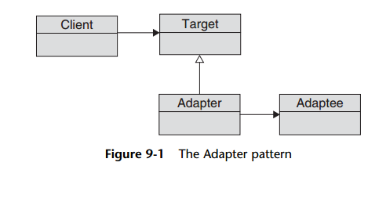

Adapter pattern
There really is no magic to adapters: They exist to soak up the differences between the
interfaces that we need and the objects that we have. An adapter supports the interface
that we need on the outside, but it implements that interface by making calls to
an object hidden inside—an object that does everything we need it to do, but does it
via the wrong interface.
. An adapter is an adapter only if you are stuck with objects that have the wrong
interface and you are trying to keep the pain of dealing with these ill-fitting interfaces
from spreading throughout your system.
